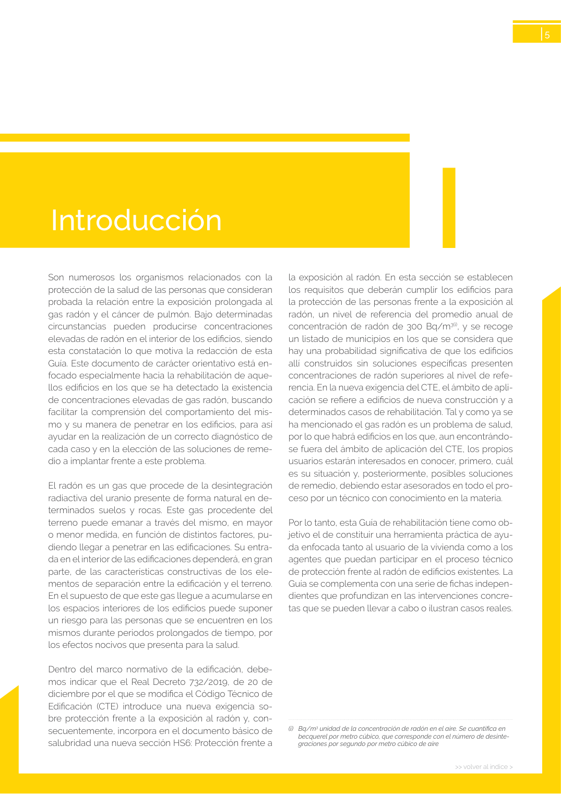

<!doctype html>
<html lang="es"><head><meta charset="utf-8">
<meta name="viewport" content="width=device-width, initial-scale=1">
<title>GUIA · p. 5 — Página 5</title><link rel="stylesheet" href="../estilo.css">
</head><body>
<nav><a href="../index.html">Índice</a> › <a href="../doc/guia-pdf-23d2f2198c3b-sin-fecha-6765d0c34c51.html">GUIA</a> › p. 5</nav>

<header class="meta">
<p><strong>GUIA</strong> · Página 5 · versión sin-fecha</p>
<p>SHA256: <code>6765d0c34c51fbe193c3ed0c1378b710f98f086d16e2b68fc28ed36e143fdaea</code> · página física 5 de 24 · métodos de encabezado
solo si están cotejados.</p>
<p><a href="../doc/guia-pdf-23d2f2198c3b-sin-fecha-6765d0c34c51.html">Documento</a> · <a href="guia-pdf-23d2f2198c3b-sin-fecha-6765d0c34c51__p0004.html">← p. 4</a> · <a href="guia-pdf-23d2f2198c3b-sin-fecha-6765d0c34c51__p0006.html">p. 6 →</a></p>
<p>Formatos: <a href="../../contenido/docs/GUIA-PDF-23d2f2198c3b/sin-fecha__6765d0c34c51/pagina/p0005.md">Markdown</a> · <a href="../../contenido/docs/GUIA-PDF-23d2f2198c3b/sin-fecha__6765d0c34c51/bloque/p0005.json">JSON de bloques</a> · <a href="../../contenido/docs/GUIA-PDF-23d2f2198c3b/sin-fecha__6765d0c34c51/fuente.pdf#page=5">PDF p. 5</a> · <a href="../../contenido/docs/GUIA-PDF-23d2f2198c3b/sin-fecha__6765d0c34c51/figura/p0005.png">imagen PNG</a></p>
</header>
<nav class="paginas"><a href="../doc/guia-pdf-23d2f2198c3b-sin-fecha-6765d0c34c51.html">Documento</a> <a href="guia-pdf-23d2f2198c3b-sin-fecha-6765d0c34c51__p0004.html">← p. 4</a> <a href="guia-pdf-23d2f2198c3b-sin-fecha-6765d0c34c51__p0006.html">p. 6 →</a></nav>
<h2>Encabezado de la página</h2><ul><li>Sin encabezado de fuente cotejada en esta página.</li></ul>

<pre class="literal">I
&gt;&gt; volver al índice &gt;
5
Son numerosos los organismos relacionados con la 
protección de la salud de las personas que consideran 
probada la relación entre la exposición prolongada al 
gas radón y el cáncer de pulmón. Bajo determinadas 
circunstancias pueden producirse concentraciones 
elevadas de radón en el interior de los edificios, siendo 
esta constatación lo que motiva la redacción de esta 
Guía. Este documento de carácter orientativo está en­
focado especialmente hacia la rehabilitación de aque­
llos edificios en los que se ha detectado la existencia 
de concentraciones elevadas de gas radón, buscando 
facilitar la comprensión del comportamiento del mis­
mo y su manera de penetrar en los edificios, para así 
ayudar en la realización de un correcto diagnóstico de 
cada caso y en la elección de las soluciones de reme­
dio a implantar frente a este problema.
El radón es un gas que procede de la desintegración 
radiactiva del uranio presente de forma natural en de­
terminados suelos y rocas. Este gas procedente del 
terreno puede emanar a través del mismo, en mayor 
o menor medida, en función de distintos factores, pu­
diendo llegar a penetrar en las edificaciones. Su entra­
da en el interior de las edificaciones dependerá, en gran 
parte, de las características constructivas de los ele­
mentos de separación entre la edificación y el terreno. 
En el supuesto de que este gas llegue a acumularse en 
los espacios interiores de los edificios puede suponer 
un riesgo para las personas que se encuentren en los 
mismos durante periodos prolongados de tiempo, por 
los efectos nocivos que presenta para la salud.
Dentro del marco normativo de la edificación, debe­
mos indicar que el Real Decreto 732/2019, de 20 de 
diciembre por el que se modifica el Código Técnico de 
Edificación (CTE) introduce una nueva exigencia so­
bre protección frente a la exposición al radón y, con­
secuentemente, incorpora en el documento básico de 
salubridad una nueva sección HS6: Protección frente a 
la exposición al radón. En esta sección se establecen 
los requisitos que deberán cumplir los edificios para 
la protección de las personas frente a la exposición al 
radón, un nivel de referencia del promedio anual de 
concentración de radón de 300 Bq/m3(i), y se recoge 
un listado de municipios en los que se considera que 
hay una probabilidad significativa de que los edificios 
allí construidos sin soluciones específicas presenten 
concentraciones de radón superiores al nivel de refe­
rencia. En la nueva exigencia del CTE, el ámbito de apli­
cación se refiere a edificios de nueva construcción y a 
determinados casos de rehabilitación. Tal y como ya se 
ha mencionado el gas radón es un problema de salud, 
por lo que habrá edificios en los que, aun encontrándo­
se fuera del ámbito de aplicación del CTE, los propios 
usuarios estarán interesados en conocer, primero, cuál 
es su situación y, posteriormente, posibles soluciones 
de remedio, debiendo estar asesorados en todo el pro­
ceso por un técnico con conocimiento en la materia.
Por lo tanto, esta Guía de rehabilitación tiene como ob­
jetivo el de constituir una herramienta práctica de ayu­
da enfocada tanto al usuario de la vivienda como a los 
agentes que puedan participar en el proceso técnico 
de protección frente al radón de edificios existentes. La 
Guía se complementa con una serie de fichas indepen­
dientes que profundizan en las intervenciones concre­
tas que se pueden llevar a cabo o ilustran casos reales.
Introducción
(i)   Bq/m3 unidad de la concentración de radón en el aire. Se cuantifica en 
becquerel por metro cúbico, que corresponde con el número de desinte­
graciones por segundo por metro cúbico de aire
</pre>
<figure><a href="../../contenido/docs/GUIA-PDF-23d2f2198c3b/sin-fecha__6765d0c34c51/figura/p0005.png"></a><figcaption>Imagen de la página 5 (PNG ya extraído; prevalece sobre fórmulas).</figcaption></figure>
<h2>Tablas candidatas de esta página</h2><ul><li><a href="../../contenido/docs/GUIA-PDF-23d2f2198c3b/sin-fecha__6765d0c34c51/tabla/p0005_t01.json">p0005_t01.json</a> · <a href="../../contenido/docs/GUIA-PDF-23d2f2198c3b/sin-fecha__6765d0c34c51/tabla/p0005_t01.csv">.csv</a> (1 × 2; candidata, no reconstruida aquí)</li></ul>
<h2>Referencias, notas y excepciones (página y vecinas)</h2><ul><li><a href="../apartado/guia-pdf-23d2f2198c3b-sin-fecha-6765d0c34c51__a0008.html">ID a0008 · Prólogo P</a></li></ul>
<h2>Apartados que incluyen esta página</h2><ul><li><a href="../apartado/guia-pdf-23d2f2198c3b-sin-fecha-6765d0c34c51__a0008.html">ID a0008 · Prólogo P</a></li><li><a href="../apartado/guia-pdf-23d2f2198c3b-sin-fecha-6765d0c34c51__a0009.html">ID a0009 · Introducción</a></li></ul>

<footer>Generado estáticamente desde JSON normalizado; sin JavaScript ni servicios externos.
El JSON es la fuente; este HTML es caché reproducible.</footer>
</body></html>
